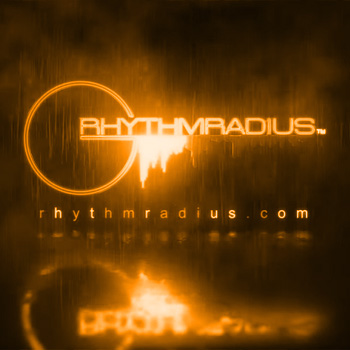
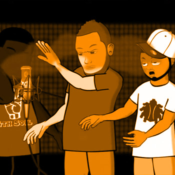

Graphic Design
With experience in graphic design dating back to my Associate degree earned in Dec 2000, I bring more than 25 years of expertise in the field of graphic design.

When it comes to making a vision a reality, the ability to approach a solution through various means and mediums is a uniqueness I bring to the table with pride. From design for print to UI experience, there's a place in your project for me.
With experience in graphic design dating back to my Associate degree earned in Dec 2000, I bring more than 25 years of expertise in the field of graphic design.
Helping you say what you want - and see what you say. Motion graphics and kinetic text are ways I can help you take your visual communication to the next level.

Acting as the bridge between your vision and reality, I take a system-building approach to developing your idea into a character, a concept, a curriculum.
